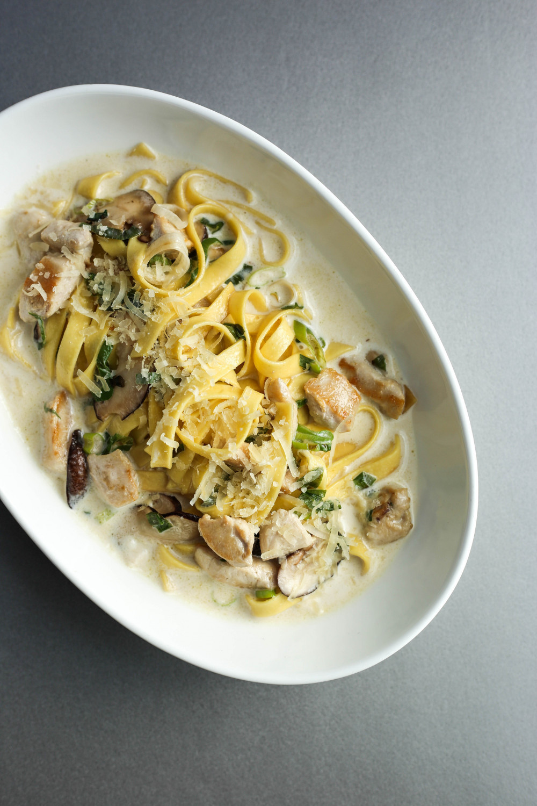

Soy Sauce Pasta

Description
This dish is straight heat. Chicken breast marinated in soy sauce
doesn't sound so pleasing on paper, but life isn't all papers.
What would be just dry chicken breast is mediated by the soy sauce
and texture is added with veggies :D issa must try !!!
Ingredients
- Pasta noodles (100g)
- Green onions (10g)
- Whip cream (250ml)
- Parmesan cheese
- 1-2 mushrooms
- Chicken breast (1 big chunk)
- Soy sauce (2 big spoons)
Steps
- Cook pasta noodles in boiling water until noodle-y.
- Chop up chicken breasts into bite-sized pieces.
- Once the outside is cooked, use cooking oil, green onions and mushrooms to cook.
- Stir fry after putting 2 spoons of soy sauce. Add whip cream and other condiments to your liking.
- Salt it to your liking. Add lots of parmesan cheese.